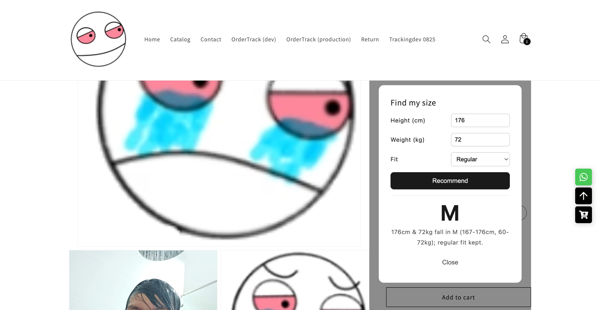
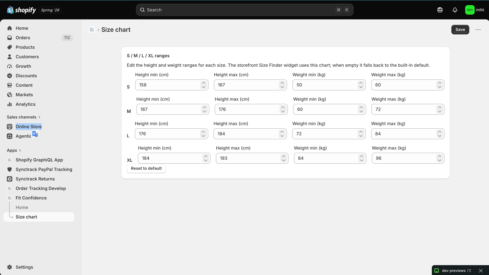
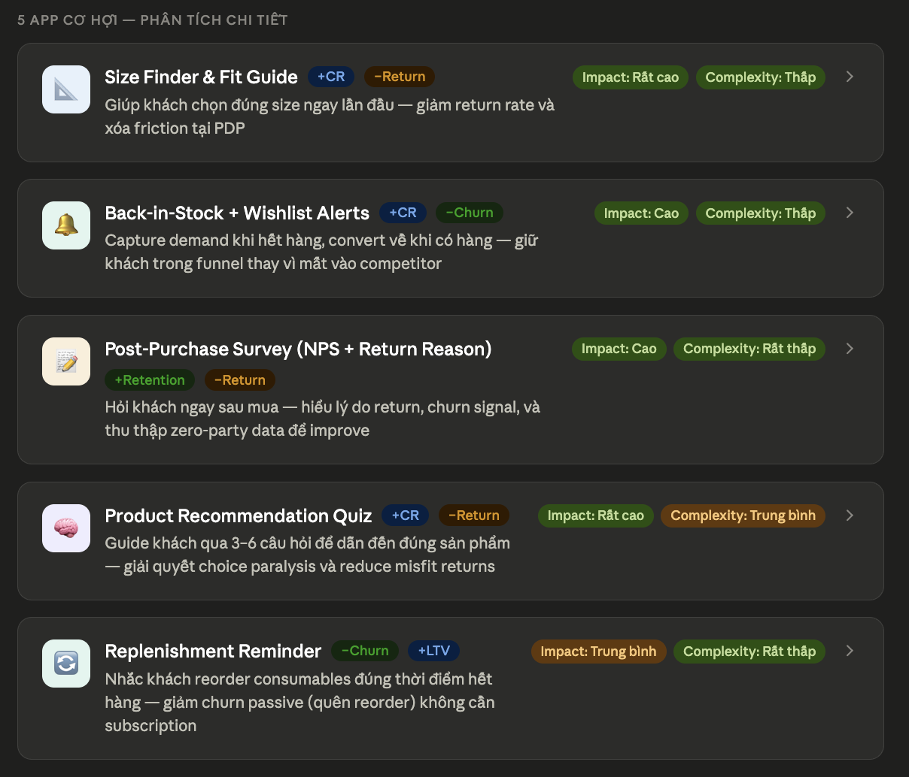
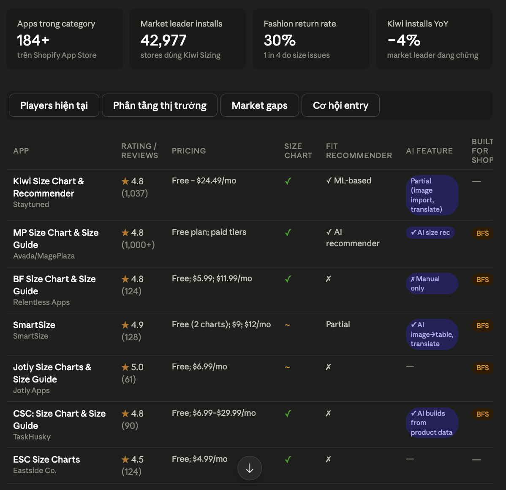
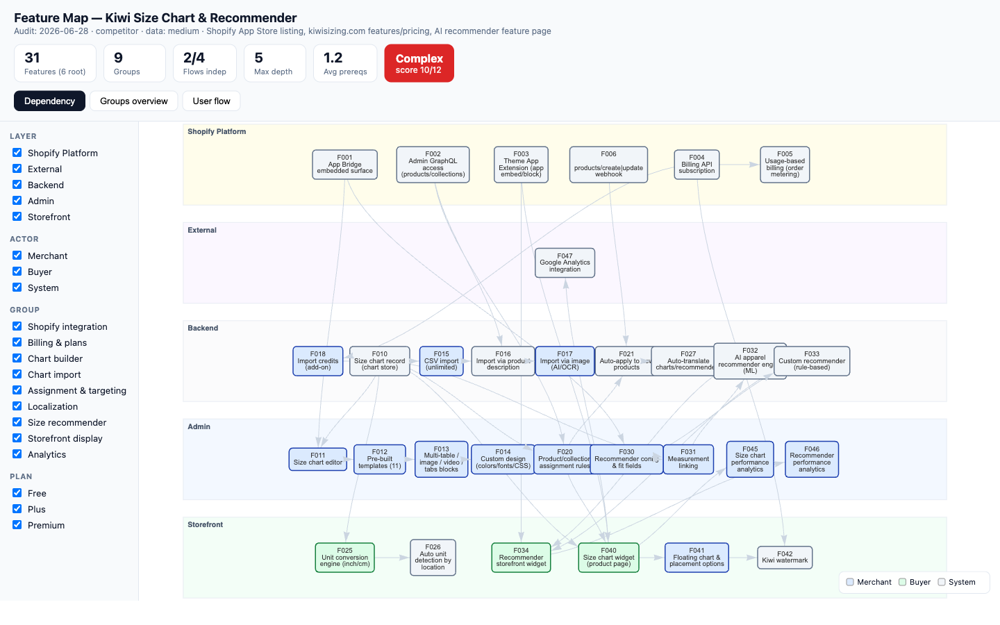

Shopify app nhỏ nhưng thật & demo được — widget "Find my size" giúp khách chọn đúng size lần đầu. Điểm nhấn: áp dụng kiến thức khóa học xuyên suốt vòng đời sản phẩm.
21/21 test ✓Deployed · v3Storefront + AdminDemo live
Câu chốt
Áp dụng kiến thức theo đúng thứ tự vòng đời
L1/L2 tìm cơ hội & cắt scope · L4/L7 dựng nền an toàn TRƯỚC khi code · L3 xuyên suốt phần code · L5/L6 cho tooling & mở rộng — chứ không "làm app xong mới gắn nhãn kiến thức".
Phase
Làm gì
Lesson
0
Tìm cơ hội & cắt scope
L1 · L2
1
Dựng harness + guardrails
L7 · L5 · L4 · L3
2
Design — spec/plan/prototype
L2 · L5
3
Build storefront (TDD)
L3 · L7
4
Build admin + metafield + debug
L3 · L6 · L5 · L7
5
Polish + quality loop
L5 · L3 · L2
Câu hỏi 1 · Mục tiêu (điểm đến)
App làm gì & kết quả
Thời trang đổi/trả ~30% do chọn sai size. Fit Confidence đủ 2 mặt: storefront widget + admin Polaris, nối qua app-owned metafield — không database.

Storefront thật: 176/72 → M + lý do

Admin: merchant tự sửa size chart
Phase 0 · Tìm cơ hội
Research — prompt có role + constraint + exclusionL1L2
"Bạn là người làm sản phẩm nhiều năm trên Shopify. Tìm app tăng CR, giảm churn & return nhưng kiến trúc đơn giản. Không giống Omegatheme mà phải bổ trợ được."

358K+ stores → 5 app cơ hội → chọn Size Finder (Impact Rất cao / Complexity Thấp)

184+ app · Kiwi 42,977 installs −4% YoY · còn gap "Built for Shop"
Phase 0 · Cắt scope
/map-feature → đọc độ phức tạp L2

Dependency map đối thủ: 5 layer · 31 feature · rating Complex 10/12 → cắt scope còn 4 hub lõi
Takeaway: chọn đề tài có cơ sở dữ liệu (impact cao · complexity thấp · leader đang chững), không cảm tính.